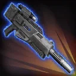
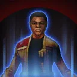

Finn
Resistance tank that keeps the pressure up with a balance between offense and defense

Resistance tank that keeps the pressure up with a balance between offense and defense

Deal Physical damage to target enemy. This attack deals 10% more damage for each time the target has been struck by it (max 100%).

All Resistance allies recover 20% Health and Protection. Finn gains Advantage, Defense Up, Taunt, and Determination for 2 turns, and dispels all debuffs from all allies.
Determination: Whenever any other Resistance ally falls below 50% Health, Determination expires and Finn Taunts for 2 turns. If that ally was Taunting, it is dispelled. When Determination expires, Finn gains Retribution for 2 turns.
Deal Physical damage to target enemy, Expose them for 2 turns, and Stun them for 1 turn. This attack deals 50% more damage for each time the target has been struck by it (max 500%).

Resistance allies have +60% Defense, Offense, and Potency, and other allies have half that amount. If an enemy is damaged by a Resistance ally, for each Expose on them: That enemy loses 5% Turn Meter for each Resistance ally, all Resistance allies gain 3% Turn Meter for each Resistance ally, and their cooldowns are reduced by 1.
Omicron Boost : While in Territory Battles and if there are no Galactic Legend allies: Resistance allies gain 60% Max Health and Protection. Enemies attacking out of turn deal 50% less damage. At the start of the encounter, revive all Resistance allies with 100% Health, recover 100% Protection, and gain Protection Up (100%) for 2 turns, which can't be dispelled or prevented, and Finn gains Determination for 2 turns. While Finn has Determination, Resistance allies are immune to critical hits, and have 100% counter chance. Whenever a Resistance ally uses a Special ability, dispel all buffs on target enemy, and inflict Expose for 2 turns, which can't be evaded or resisted. Whenever another Resistance ally is damaged by an enemy attack, Finn has a 20% chance to gain 100% Turn Meter once per turn. If an enemy is damaged by a Resistance ally, for each Expose on them, deal additional true damage to all other enemies, then Resistance allies recover 10% Health and gain 2 Speed (max 60) for the rest of the battle.